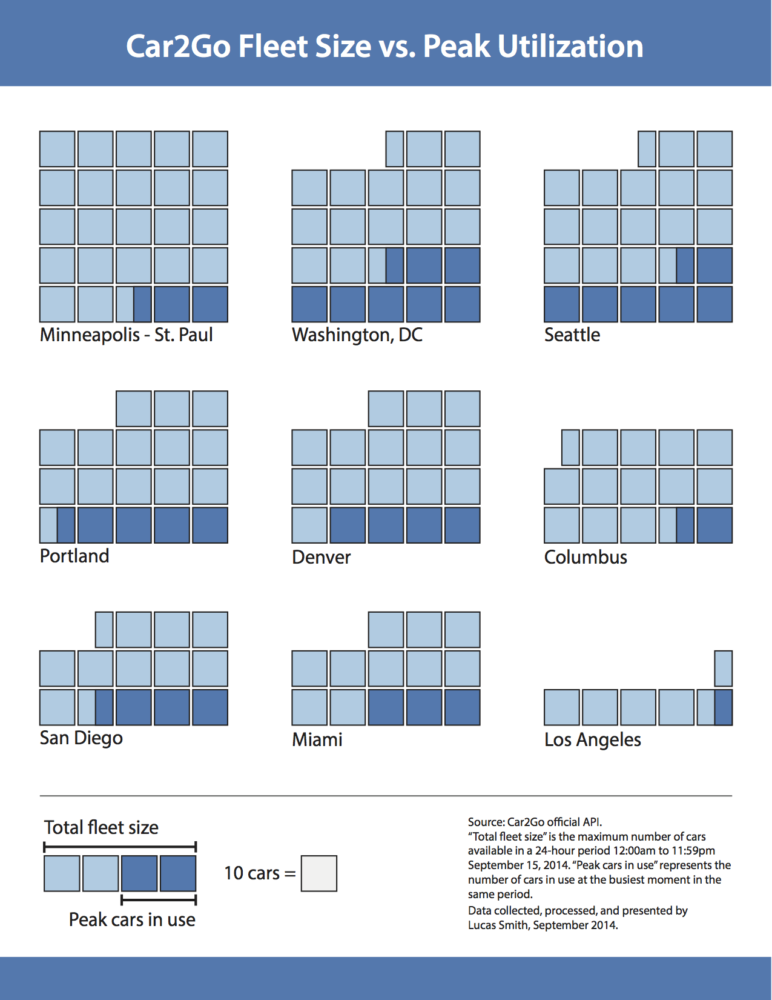

Infographic
Where is car2go used the most? Where is it used the least? By tracking the utilization of car2go in multiple cities over the course of a 24-hour period, we can see which cities use the cars the most–and where the fleets might be excessive.
Click to view full-sized PDF.